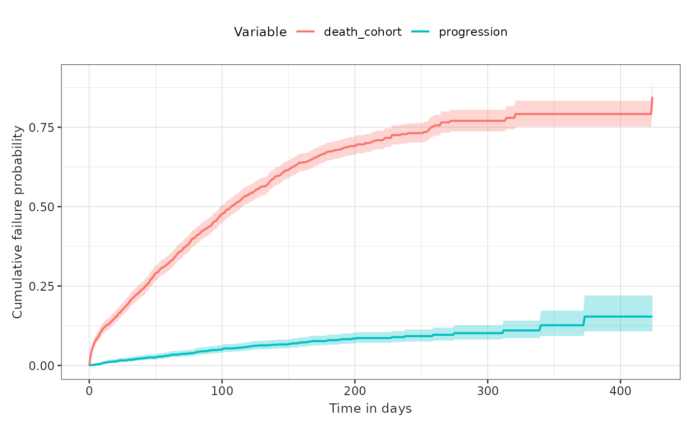

Competing risk survival
a02_Competing_risk_survival.RmdSet up
Let’s first load the packages required.
We’ll create a cdm reference to use our example MGUS2 survival dataset. In practice you would use the CDMConnector package to connect to your data mapped to the OMOP CDM.
cdm <- CohortSurvival::mockMGUS2cdm()We will proceed as we did with the single event survival, but this time we are considering an event of interest (progression of disease) with a competing risk (mortality).
We would typically need to define study cohorts ourselves, but in the case of our example data we already have these cohorts available. You can see for our diagnosis cohort we also have a number of additional features recorded for individuals which we’ll use for stratification.
cdm$mgus_diagnosis %>%
glimpse()
#> Rows: ??
#> Columns: 10
#> Database: DuckDB v1.1.3-dev165 [unknown@Linux 6.5.0-1025-azure:R 4.4.2/:memory:]
#> $ cohort_definition_id <int> 1, 1, 1, 1, 1, 1, 1, 1, 1, 1, 1, 1, 1, 1, 1, 1, 1…
#> $ subject_id <int> 1, 2, 3, 4, 5, 6, 7, 8, 9, 10, 11, 12, 13, 14, 15…
#> $ cohort_start_date <date> 1981-01-01, 1968-01-01, 1980-01-01, 1977-01-01, …
#> $ cohort_end_date <date> 1981-01-01, 1968-01-01, 1980-01-01, 1977-01-01, …
#> $ age <dbl> 88, 78, 94, 68, 90, 90, 89, 87, 86, 79, 86, 89, 8…
#> $ sex <fct> F, F, M, M, F, M, F, F, F, F, M, F, M, F, M, F, F…
#> $ hgb <dbl> 13.1, 11.5, 10.5, 15.2, 10.7, 12.9, 10.5, 12.3, 1…
#> $ creat <dbl> 1.30, 1.20, 1.50, 1.20, 0.80, 1.00, 0.90, 1.20, 0…
#> $ mspike <dbl> 0.5, 2.0, 2.6, 1.2, 1.0, 0.5, 1.3, 1.6, 2.4, 2.3,…
#> $ age_group <chr> ">=70", ">=70", ">=70", "<70", ">=70", ">=70", ">…
cdm$death_cohort %>%
glimpse()
#> Rows: ??
#> Columns: 4
#> Database: DuckDB v1.1.3-dev165 [unknown@Linux 6.5.0-1025-azure:R 4.4.2/:memory:]
#> $ cohort_definition_id <int> 1, 1, 1, 1, 1, 1, 1, 1, 1, 1, 1, 1, 1, 1, 1, 1, 1…
#> $ subject_id <int> 1, 2, 3, 4, 5, 6, 7, 8, 10, 11, 12, 13, 14, 15, 1…
#> $ cohort_start_date <date> 1981-01-31, 1968-01-26, 1980-02-16, 1977-04-03, …
#> $ cohort_end_date <date> 1981-01-31, 1968-01-26, 1980-02-16, 1977-04-03, …
cdm$progression %>%
glimpse()
#> Rows: ??
#> Columns: 4
#> Database: DuckDB v1.1.3-dev165 [unknown@Linux 6.5.0-1025-azure:R 4.4.2/:memory:]
#> $ cohort_definition_id <int> 1, 1, 1, 1, 1, 1, 1, 1, 1, 1, 1, 1, 1, 1, 1, 1, 1…
#> $ subject_id <int> 56, 81, 83, 111, 124, 127, 147, 163, 165, 167, 18…
#> $ cohort_start_date <date> 1978-01-30, 1985-01-15, 1974-08-17, 1993-01-14, …
#> $ cohort_end_date <date> 1978-01-30, 1985-01-15, 1974-08-17, 1993-01-14, …Estimating survival with competing risk
The package allows to estimate survival of both an outcome and competing risk outcome. We can then stratify, see information on events, summarise the estimates and check the contributing participants in the same way we did for the single event survival analysis.
MGUS_death_prog <- estimateCompetingRiskSurvival(cdm,
targetCohortTable = "mgus_diagnosis",
outcomeCohortTable = "progression",
competingOutcomeCohortTable = "death_cohort"
)
MGUS_death_prog %>%
asSurvivalResult() %>%
glimpse()
#> Rows: 2,550
#> Columns: 13
#> $ cdm_name <chr> "mock", "mock", "mock", "mock", "mock", "mock", "moc…
#> $ target_cohort <chr> "mgus_diagnosis", "mgus_diagnosis", "mgus_diagnosis"…
#> $ outcome <chr> "progression", "progression", "progression", "progre…
#> $ competing_outcome <chr> "death_cohort", "death_cohort", "death_cohort", "dea…
#> $ strata_name <chr> "overall", "overall", "overall", "overall", "overall…
#> $ strata_level <chr> "overall", "overall", "overall", "overall", "overall…
#> $ variable_name <chr> "outcome", "outcome", "outcome", "outcome", "outcome…
#> $ variable_level <chr> "progression", "progression", "progression", "progre…
#> $ estimate_name <chr> "estimate", "estimate_95CI_lower", "estimate_95CI_up…
#> $ estimate_type <chr> "numeric", "numeric", "numeric", "numeric", "numeric…
#> $ estimate_value <dbl> 0.0000, 0.0000, 0.0000, 0.0000, NA, NA, 0.0014, 0.00…
#> $ time <dbl> 0, 0, 0, 1, 1, 1, 2, 2, 2, 3, 3, 3, 4, 4, 4, 5, 5, 5…
#> $ result_type <chr> "cumulative_failure_probability", "cumulative_failur…As we can see above our results have been outputted in long format. We can plot these results like so.
plotSurvival(MGUS_death_prog, cumulativeFailure = TRUE,
colour = "variable_level") +
theme(legend.position = "top")
Our returned results also have attributes containing information that summarises survival.
tableSurvival(MGUS_death_prog) | CDM name | Target cohort | Outcome type | Outcome name |
Estimate name
|
||
|---|---|---|---|---|---|---|
| Number records | Number events | Restricted mean survival | ||||
| mock | mgus_diagnosis | outcome | progression | 1,384 | 106 | 35.00 |
| competing_outcome | death_cohort | 1,384 | 869 | 260.00 | ||
With stratification
To estimate survival for particular strata of interest we need these features to have been added to the target cohort table. Once we have them defined, and as seen above we already have a number of example characteristics added to our diagnosis cohort, we can add stratifications like so.
MGUS_death_prog <- estimateCompetingRiskSurvival(cdm,
targetCohortTable = "mgus_diagnosis",
outcomeCohortTable = "progression",
competingOutcomeCohortTable = "death_cohort",
strata = list(c("sex"))
)As we can see as well as results for each strata, we’ll always also have overall results returned. We can filter the output table to plot only the results for the different strata levels. We can also ask for the cumulative failure probability to be plotted instead of the survival probability.
plotSurvival(MGUS_death_prog %>%
dplyr::filter(strata_name != "Overall"),
facet = "strata_level",
colour = "variable_level",
cumulativeFailure = TRUE)
And we also now have summary statistics for each of the strata as well as overall.
tableSurvival(MGUS_death_prog)| CDM name | Target cohort | Sex | Outcome type | Outcome name |
Estimate name
|
||
|---|---|---|---|---|---|---|---|
| Number records | Number events | Restricted mean survival | |||||
| mock | mgus_diagnosis | overall | outcome | progression | 1,384 | 106 | 35.00 |
| competing_outcome | death_cohort | 1,384 | 869 | 260.00 | |||
| F | outcome | progression | 631 | 55 | 40.00 | ||
| M | outcome | progression | 753 | 51 | 29.00 | ||
| F | competing_outcome | death_cohort | 631 | 374 | 245.00 | ||
| M | competing_outcome | death_cohort | 753 | 495 | 272.00 | ||
Disconnect from the cdm database connection
cdm_disconnect(cdm)